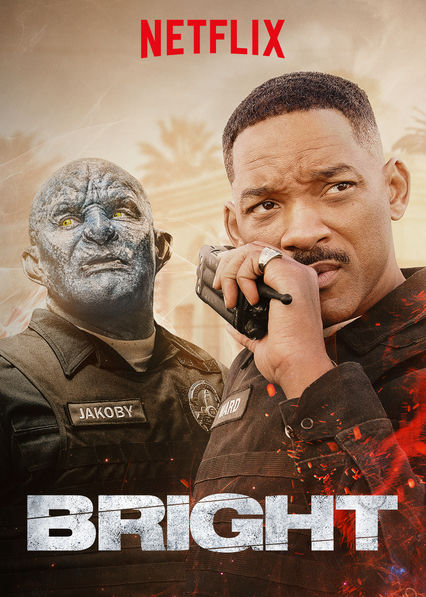
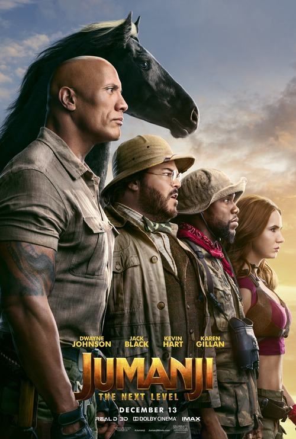

Esquadrão trovão
2021 | 13+ | 1 h 47 min | Ação e aventura, Comédias
Criado por Ben Falcone
Elenco: Melissa McCarthy,Octavia Spencer,Jason Bateman
Duas amigas de infância voltam a juntar-se para formar uma dupla improvável de super-heroínas quando uma delas inventa uma fórmula que dá superpoderes a pessoas normais.
2
Shaft
2019 | 16+ | 1 h 52 min | Ação e aventura
Criado por: Tim Story
Elenco: Samuel L. Jackson,Jessie T. Usher,Regina Hall
O detetive privado e durão John Shaft percebe que, na verdade, filho de peixe nem sempre sabe nadar quando o seu filho desconhecido lhe bate à porta para pedir ajuda.
3
8 mile
2002 | 16+ | 1 h 50 min | Música e musicais
Criado por: Curtis Hanson
Elenco: Eminem,Kim Basinger,Mekhi Phifer
Jimmy, aspirante a artista de hip-hop, vê o distrito 8 Mile de Detroit como uma barreira psicológica que o separa de onde quer estar e quem quer ser.

4
Bright
2017 | 16+ | 1 h 57 min | Ação e aventura
Criado por: David Ayer
Elenco: Will Smith,Joel Edgerton,Noomi Rapace
Em LA, as tensões entre espécies multiplicam-se. Um polícia humano e o seu parceiro orc encontram um objeto poderoso que os envolve num conflito há muito profetizado.

5
Jumanji: Bem-Vindos à Selva
2017 | 13+ | 1 h 59 min | Filmes baseados em livros
Criado por:
Elenco: Dwayne Johnson,Kevin Hart,Jack Black
Quatro alunos do liceu são sugados para dentro de um videojogo, onde têm de enfrentar a selva numa missão na pele de avatares adultos ridiculamente diferentes deles.